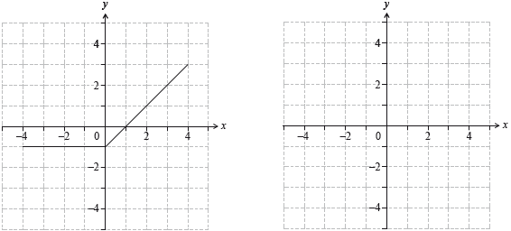
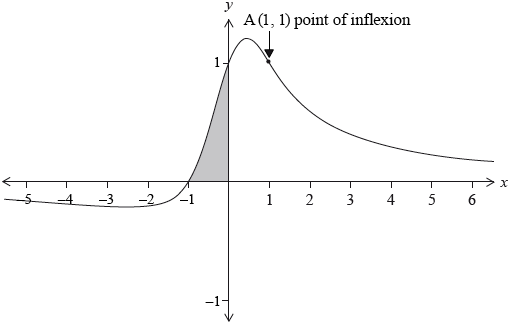
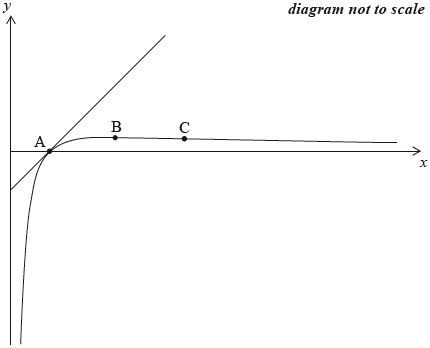

HL Paper 1
Show that the points (0, 0) and (\(\sqrt {2\pi } \) , \( - \sqrt {2\pi } \) ) on the curve \({{\text{e}}^{\left( {x + y} \right)}} = \cos \left( {xy} \right)\) have a common tangent.
Let \(f(x) = \sqrt {\frac{x}{{1 - x}}} ,{\text{ }}0 < x < 1\).
Show that \(f'(x) = \frac{1}{2}{x^{ - \frac{1}{2}}}{(1 - x)^{ - \frac{3}{2}}}\) and deduce that f is an increasing function.
Show that the curve \(y = f(x)\) has one point of inflexion, and find its coordinates.
Use the substitution \(x = {\sin ^2}\theta \) to show that \(\int {f(x){\text{d}}x} = \arcsin \sqrt x - \sqrt {x - {x^2}} + c\) .
The first set of axes below shows the graph of \(y = {\text{ }}f(x)\) for \( - 4 \leqslant x \leqslant 4\).

Let \(g(x) = \int_{ - 4}^x {f(t){\text{d}}t} \) for \( - 4 \leqslant x \leqslant 4\).
(a) State the value of x at which \(g(x)\) is a minimum.
(b) On the second set of axes, sketch the graph of \(y = g(x)\).
The function f is defined by \(f(x) = {{\text{e}}^{{x^2} - 2x - 1.5}}\).
(a) Find \(f'(x)\).
(b) You are given that \(y = \frac{{f(x)}}{{x - 1}}\) has a local minimum at x = a, a > 1. Find the
value of a.
The following diagram shows the graph of \(y = \frac{{{{(\ln x)}^2}}}{x},{\text{ }}x > 0\).

The region \(R\) is enclosed by the curve, the \(x\)-axis and the line \(x = e\).
Let \({I_n} = \int_1^{\text{e}} {\frac{{{{(\ln x)}^n}}}{{{x^2}}}{\text{d}}x,{\text{ }}n \in \mathbb{N}} \).
Given that the curve passes through the point \((a,{\text{ }}0)\), state the value of \(a\).
Use the substitution \(u = \ln x\) to find the area of the region \(R\).
(i) Find the value of \({I_0}\).
(ii) Prove that \({I_n} = \frac{1}{{\text{e}}} + n{I_{n - 1}},{\text{ }}n \in {\mathbb{Z}^ + }\).
(iii) Hence find the value of \({I_1}\).
Find the volume of the solid formed when the region \(R\) is rotated through \(2\pi \) about the \(x\)-axis.
Consider the functions \(f,\,\,g,\) defined for \(x \in \mathbb{R}\), given by \(f\left( x \right) = {{\text{e}}^{ - x}}\,{\text{sin}}\,x\) and \(g\left( x \right) = {{\text{e}}^{ - x}}\,{\text{cos}}\,x\).
Find \(f'\left( x \right)\).
Find \(g'\left( x \right)\).
Hence, or otherwise, find \(\int\limits_0^\pi {{{\text{e}}^{ - x}}\,{\text{sin}}\,x\,{\text{d}}x} \).
A drinking glass is modelled by rotating the graph of \(y = {{\text{e}}^x}\) about the y-axis, for \(1 \leqslant y \leqslant 5\) . Find the volume of the glass.
A curve is defined by \(xy = {y^2} + 4\).
Show that there is no point where the tangent to the curve is horizontal.
Find the coordinates of the points where the tangent to the curve is vertical.
Consider the function defined by \(f(x) = x\sqrt {1 - {x^2}} \) on the domain \( - 1 \le x \le 1\).
Show that \(f\) is an odd function.
Find \(f'(x)\).
Hence find the \(x\)-coordinates of any local maximum or minimum points.
Find the range of \(f\).
Sketch the graph of \(y = f(x)\) indicating clearly the coordinates of the \(x\)-intercepts and any local maximum or minimum points.
Find the area of the region enclosed by the graph of \(y = f(x)\) and the \(x\)-axis for \(x \ge 0\).
Show that \(\int_{ - 1}^1 {\left| {x\sqrt {1 - {x^2}} } \right|{\text{d}}x > \left| {\int_{ - 1}^1 {x\sqrt {1 - {x^2}} {\text{d}}x} } \right|} \).
Let \(y(x) = x{e^{3x}},{\text{ }}x \in \mathbb{R}\).
Find \(\frac{{{\text{d}}y}}{{{\text{d}}x}}\).
Prove by induction that \(\frac{{{{\text{d}}^n}y}}{{{\text{d}}{x^n}}} = n{3^{n - 1}}{{\text{e}}^{3x}} + x{3^n}{{\text{e}}^{3x}}\) for \(n \in {\mathbb{Z}^ + }\).
Find the coordinates of any local maximum and minimum points on the graph of \(y(x)\).
Justify whether any such point is a maximum or a minimum.
Find the coordinates of any points of inflexion on the graph of \(y(x)\). Justify whether any such point is a point of inflexion.
Hence sketch the graph of \(y(x)\), indicating clearly the points found in parts (c) and (d) and any intercepts with the axes.
Using integration by parts find \(\int {x\sin x{\text{d}}x} \).
By using the substitution \(u = {{\text{e}}^x} + 3\), find \(\int {\frac{{{{\text{e}}^x}}}{{{{\text{e}}^{2x}} + 6{{\text{e}}^x} + 13}}{\text{d}}x} \).
Consider the function defined by \(f(x) = {x^3} - 3{x^2} + 4\).
Determine the values of \(x\) for which \(f(x)\) is a decreasing function.
There is a point of inflexion, \(P\), on the curve \(y = f(x)\).
Find the coordinates of \(P\).
Show that \(\sin \left( {\theta + \frac{\pi }{2}} \right) = \cos \theta \).
Consider \(f(x) = \sin (ax)\) where \(a\) is a constant. Prove by mathematical induction that \({f^{(n)}}(x) = {a^n}\sin \left( {ax + \frac{{n\pi }}{2}} \right)\) where \(n \in {\mathbb{Z}^ + }\) and \({f^{(n)}}(x)\) represents the \({{\text{n}}^{{\text{th}}}}\) derivative of \(f(x)\).
Find the value of the integral \(\int_0^{\sqrt 2 } {\sqrt {4 - {x^2}} {\text{d}}x} \) .
Find the value of the integral \(\int_0^{0.5} {\arcsin x {\text{d}}x} \) .
Using the substitution \(t = \tan \theta \) , find the value of the integral
\[\int_0^{\frac{\pi }{4}} {\frac{{{\text{d}}\theta }}{{3{{\cos }^2}\theta + {{\sin }^2}\theta }}} {\text{ }}.\]
The graph of the function \(f(x) = \frac{{x + 1}}{{{x^2} + 1}}\) is shown below.

The point (1, 1) is a point of inflexion. There are two other points of inflexion.
Find \(f'(x)\).
Hence find the \(x\)-coordinates of the points where the gradient of the graph of \(f\) is zero.
Find \(f''(x)\) expressing your answer in the form \(\frac{{p(x)}}{{{{({x^2} + 1)}^3}}}\), where \(p(x)\) is a polynomial of degree 3.
Find the \(x\)-coordinates of the other two points of inflexion.
Find the area of the shaded region. Express your answer in the form \(\frac{\pi }{a} - \ln \sqrt b \), where \(a\) and \(b\) are integers.
Consider the complex number \(z = \cos \theta + {\text{i}}\sin \theta \).
The region S is bounded by the curve \(y = \sin x{\cos ^2}x\) and the x-axis between \(x = 0\) and \(x = \frac{\pi }{2}\).
Use De Moivre’s theorem to show that \({z^n} + {z^{ - n}} = 2\cos n\theta ,{\text{ }}n \in {\mathbb{Z}^ + }\).
Expand \({\left( {z + {z^{ - 1}}} \right)^4}\).
Hence show that \({\cos ^4}\theta = p\cos 4\theta + q\cos 2\theta + r\), where \(p,{\text{ }}q\) and \(r\) are constants to be determined.
Show that \({\cos ^6}\theta = \frac{1}{{32}}\cos 6\theta + \frac{3}{{16}}\cos 4\theta + \frac{{15}}{{32}}\cos 2\theta + \frac{5}{{16}}\).
Hence find the value of \(\int_0^{\frac{\pi }{2}} {{{\cos }^6}\theta {\text{d}}\theta } \).
S is rotated through \(2\pi \) radians about the x-axis. Find the value of the volume generated.
(i) Write down an expression for the constant term in the expansion of \({\left( {z + {z^{ - 1}}} \right)^{2k}}\), \(k \in {\mathbb{Z}^ + }\).
(ii) Hence determine an expression for \(\int_0^{\frac{\pi }{2}} {{{\cos }^{2k}}\theta {\text{d}}\theta } \) in terms of k.
The graphs of \(f(x) = - {x^2} + 2\) and \(g(x) = {x^3} - {x^2} - bx + 2,{\text{ }}b > 0\), intersect and create two closed regions. Show that these two regions have equal areas.
![]()
Consider the part of the curve \(4{x^2} + {y^2} = 4\) shown in the diagram below.
![]()
(a) Find an expression for \(\frac{{{\text{d}}y}}{{{\text{d}}x}}\) in terms of x and y .
(b) Find the gradient of the tangent at the point \(\left( {\frac{2}{{\sqrt 5 }},\frac{2}{{\sqrt 5 }}} \right)\).
(c) A bowl is formed by rotating this curve through \(2\pi \) radians about the x-axis.
Calculate the volume of this bowl.
The curve C with equation \(y = f(x)\) satisfies the differential equation
\[\frac{{{\text{d}}y}}{{{\text{d}}x}} = \frac{y}{{\ln y}}(x + 2),{\text{ }}y > 1,\]
and y = e when x = 2.
Find the equation of the tangent to C at the point (2, e).
Find \(f(x)\).
Determine the largest possible domain of f.
Show that the equation \(f(x) = f'(x)\) has no solution.
A curve has equation \(3x - 2{y^2}{{\text{e}}^{x - 1}} = 2\).
Find an expression for \(\frac{{{\text{d}}y}}{{{\text{d}}x}}\) in terms of \(x\) and \(y\).
Find the equations of the tangents to this curve at the points where the curve intersects the line \(x = 1\).
A curve has equation \(\arctan {x^2} + \arctan {y^2} = \frac{\pi }{4}\).
(a) Find \(\frac{{{\text{d}}y}}{{{\text{d}}x}}\) in terms of x and y.
(b) Find the gradient of the curve at the point where \(x = \frac{1}{{\sqrt 2 }}\) and \(y < 0\).
Let \({x^3}y = a\sin nx\) . Using implicit differentiation, show that
\[{x^3}\frac{{{{\text{d}}^2}y}}{{{\text{d}}{x^2}}} + 6{x^2}\frac{{{\text{d}}y}}{{{\text{d}}x}} + ({n^2}{x^2} + 6)xy = 0\] .
Let \(y = {{\text{e}}^x}\sin x\).
Consider the function \(f\) defined by \(f(x) = {{\text{e}}^x}\sin x,{\text{ }}0 \leqslant x \leqslant \pi \).
The curvature at any point \((x,{\text{ }}y)\) on a graph is defined as \(\kappa = \frac{{\left| {\frac{{{{\text{d}}^2}y}}{{{\text{d}}{x^2}}}} \right|}}{{{{\left( {1 + {{\left( {\frac{{{\text{d}}y}}{{{\text{d}}x}}} \right)}^2}} \right)}^{\frac{3}{2}}}}}\).
Find an expression for \(\frac{{{\text{d}}y}}{{{\text{d}}x}}\).
Show that \(\frac{{{{\text{d}}^2}y}}{{{\text{d}}{x^2}}} = 2{{\text{e}}^x}\cos x\).
Show that the function \(f\) has a local maximum value when \(x = \frac{{3\pi }}{4}\).
Find the \(x\)-coordinate of the point of inflexion of the graph of \(f\).
Sketch the graph of \(f\), clearly indicating the position of the local maximum point, the point of inflexion and the axes intercepts.
Find the area of the region enclosed by the graph of \(f\) and the \(x\)-axis.
The curvature at any point \((x,{\text{ }}y)\) on a graph is defined as \(\kappa = \frac{{\left| {\frac{{{{\text{d}}^2}y}}{{{\text{d}}{x^2}}}} \right|}}{{{{\left( {1 + {{\left( {\frac{{{\text{d}}y}}{{{\text{d}}x}}} \right)}^2}} \right)}^{\frac{3}{2}}}}}\).
Find the value of the curvature of the graph of \(f\) at the local maximum point.
Find the value \(\kappa \) for \(x = \frac{\pi }{2}\) and comment on its meaning with respect to the shape of the graph.
The diagram below shows a circular lake with centre O, diameter AB and radius 2 km.
![]()
Jorg needs to get from A to B as quickly as possible. He considers rowing to point P and then walking to point B. He can row at \(3{\text{ km}}\,{{\text{h}}^{ - 1}}\) and walk at \(6{\text{ km}}\,{{\text{h}}^{ - 1}}\). Let \({\rm{P\hat AB}} = \theta \) radians, and t be the time in hours taken by Jorg to travel from A to B.
Show that \(t = \frac{2}{3}(2\cos \theta + \theta )\).
Find the value of \(\theta \) for which \(\frac{{{\text{d}}t}}{{{\text{d}}\theta }} = 0\).
What route should Jorg take to travel from A to B in the least amount of time?
Give reasons for your answer.
Using the definition of a derivative as \(f'(x) = \mathop {\lim }\limits_{h \to 0} \left( {\frac{{f(x + h) - f(x)}}{h}} \right)\) , show that the derivative of \(\frac{1}{{2x + 1}}{\text{ is }}\frac{{ - 2}}{{{{(2x + 1)}^2}}}\).
Prove by induction that the \({n^{{\text{th}}}}\) derivative of \({(2x + 1)^{ - 1}}\) is \({( - 1)^n}\frac{{{2^n}n!}}{{{{(2x + 1)}^{n + 1}}}}\).
Calculate the exact value of \(\int_1^{\text{e}} {{x^2}\ln x{\text{d}}x} \) .
The function f is defined by
\[f(x) = \left\{ \begin{array}{r}1 - 2x,\\{\textstyle{3 \over 4}}{(x - 2)^2} - 3,\end{array} \right.\begin{array}{*{20}{c}}{x \le 2}\\{x > 2}\end{array}\]
Determine whether or not \(f\)is continuous.
The graph of the function \(g\) is obtained by applying the following transformations to the graph of \(f\):
a reflection in the \(y\)–axis followed by a translation by the vector \(\left( \begin{array}{l}2\\0\end{array} \right)\).
Find \(g(x)\).
The function f is defined, for \( - \frac{\pi }{2} \leqslant x \leqslant \frac{\pi }{2}\) , by \(f(x) = 2\cos x + x\sin x\) .
Determine whether f is even, odd or neither even nor odd.
Show that \(f''(0) = 0\) .
John states that, because \(f''(0) = 0\) , the graph of f has a point of inflexion at the point (0, 2) . Explain briefly whether John’s statement is correct or not.
A window is made in the shape of a rectangle with a semicircle of radius \(r\) metres on top, as shown in the diagram. The perimeter of the window is a constant P metres.

Find the area of the window in terms of P and \(r\).
Find the width of the window in terms of P when the area is a maximum, justifying that this is a maximum.
Show that in this case the height of the rectangle is equal to the radius of the semicircle.
A tranquilizer is injected into a muscle from which it enters the bloodstream.
The concentration \(C\) in \({\text{mg}}{{\text{l}}^{ - 1}}\), of tranquilizer in the bloodstream can be modelled by the function \(C(t) = \frac{{2t}}{{3 + {t^2}}},{\text{ }}t \ge 0\) where \(t\) is the number of minutes after the injection.
Find the maximum concentration of tranquilizer in the bloodstream.
Show that \(\cot \alpha = \tan \left( {\frac{\pi }{2} - \alpha } \right)\) for \(0 < \alpha < \frac{\pi }{2}\).
Hence find \(\int_{\tan \alpha }^{\cot \alpha } {\frac{1}{{1 + {x^2}}}{\text{d}}x,{\text{ }}0 < \alpha < \frac{\pi }{2}} \).
Given that \(\int_{ - 2}^2 {f\left( x \right){\text{d}}x = 10} \) and \(\int_0^2 {f\left( x \right){\text{d}}x = 12} \), find
\(\int_{ - 2}^0 {\left( {f\left( x \right){\text{ + 2}}} \right){\text{d}}x} \).
\(\int_{ - 2}^0 {f\left( {x{\text{ + 2}}} \right){\text{d}}x} \).
By using the substitution \(t = \tan x\), find \(\int {\frac{{{\text{d}}x}}{{1 + {{\sin }^2}x}}} \).
Express your answer in the form \(m\arctan (n\tan x) + c\), where \(m\), \(n\) are constants to be determined.
Find the equation of the normal to the curve \(5x{y^2} - 2{x^2} = 18\) at the point (1, 2) .
Consider the function \(f(x) = \frac{{\ln x}}{x},{\text{ }}x > 0\).
The sketch below shows the graph of \(y = {\text{ }}f(x)\) and its tangent at a point A.

Show that \(f'(x) = \frac{{1 - \ln x}}{{{x^2}}}\).
Find the coordinates of B, at which the curve reaches its maximum value.
Find the coordinates of C, the point of inflexion on the curve.
The graph of \(y = {\text{ }}f(x)\) crosses the \(x\)-axis at the point A.
Find the equation of the tangent to the graph of \(f\) at the point A.
The graph of \(y = {\text{ }}f(x)\) crosses the \(x\)-axis at the point A.
Find the area enclosed by the curve \(y = f(x)\), the tangent at A, and the line \(x = {\text{e}}\).
The region enclosed between the curves \(y = \sqrt x {{\text{e}}^x}\) and \(y = {\text{e}}\sqrt x \) is rotated through \(2\pi \) about the x-axis. Find the volume of the solid obtained.
The curve C is given by \(y = \frac{{x\cos x}}{{x + \cos x}}\), for \(x \geqslant 0\).
Show that \(\frac{{{\text{d}}y}}{{{\text{d}}x}} = \frac{{{{\cos }^2}x - {x^2}\sin x}}{{{{(x + \cos x)}^2}}},{\text{ }}x \geqslant 0\).
Find the equation of the tangent to C at the point \(\left( {\frac{\pi }{2},0} \right)\).
Find \(\int {(1 + {{\tan }^2}x){\text{d}}x} \).
Find \(\int {{{\sin }^2}x{\text{d}}x} \).
By using the substitution \(u = 1 + \sqrt x \), find \(\int {\frac{{\sqrt x }}{{1 + \sqrt x }}{\text{d}}x} \).
Let \(y = {\text{si}}{{\text{n}}^2}\theta ,\,\,0 \leqslant \theta \leqslant \pi \).
Find \(\frac{{{\text{d}}y}}{{{\text{d}}\theta }}\)
Hence find the values of θ for which \(\frac{{{\text{d}}y}}{{{\text{d}}\theta }} = 2y\).
A particle moves along a straight line. Its displacement, \(s\) metres, at time \(t\) seconds is given by \(s = t + \cos 2t,{\text{ }}t \geqslant 0\). The first two times when the particle is at rest are denoted by \({t_1}\) and \({t_2}\), where \({t_1} < {t_2}\).
Find \({t_1}\) and \({t_2}\).
Find the displacement of the particle when \(t = {t_1}\)
Using the substitution \(x = \tan \theta \) show that \(\int\limits_0^1 {\frac{1}{{{{\left( {{x^2} + 1} \right)}^2}}}{\text{d}}x = } \int\limits_0^{\frac{\pi }{4}} {{{\cos }^2}\theta {\text{d}}\theta } \).
Hence find the value of \(\int\limits_0^1 {\frac{1}{{{{\left( {{x^2} + 1} \right)}^2}}}{\text{d}}x} \).
Use the substitution \(u = \ln x\) to find the value of \(\int_{\text{e}}^{{{\text{e}}^2}} {\frac{{{\text{d}}x}}{{x\ln x}}} \).
Use the identity \(\cos 2\theta = 2{\cos ^2}\theta - 1\) to prove that \(\cos \frac{1}{2}x = \sqrt {\frac{{1 + \cos x}}{2}} ,{\text{ }}0 \leqslant x \leqslant \pi \).
Find a similar expression for \(\sin \frac{1}{2}x,{\text{ }}0 \leqslant x \leqslant \pi \).
Hence find the value of \(\int_0^{\frac{\pi }{2}} {\left( {\sqrt {1 + \cos x} + \sqrt {1 - \cos x} } \right){\text{d}}x} \).
Paint is poured into a tray where it forms a circular pool with a uniform thickness of 0.5 cm. If the paint is poured at a constant rate of \(4{\text{ c}}{{\text{m}}^3}{{\text{s}}^{ - 1}}\), find the rate of increase of the radius of the circle when the radius is 20 cm.
Consider two functions \(f\) and \(g\) and their derivatives \(f'\) and \(g'\). The following table shows the values for the two functions and their derivatives at \(x = 1\), \(2\) and \(3\).

Given that \(p(x) = f(x)g(x)\) and \(h(x) = g \circ f(x)\), find
\(p'(3)\);
\(h'(2)\).
The region bounded by the curve \(y = \frac{{\ln (x)}}{x}\) and the lines x = 1, x = e, y = 0 is rotated through \(2\pi \) radians about the x-axis.
Find the volume of the solid generated.
Consider the curve \(y = \frac{1}{{1 - x}},{\text{ }}x \in \mathbb{R},{\text{ }}x \ne 1\).
Find \(\frac{{{\text{d}}y}}{{{\text{d}}x}}\).
Determine the equation of the normal to the curve at the point \(x = 3\) in the form \(ax + by + c = 0\) where \(a,{\text{ }}b,{\text{ }}c \in \mathbb{Z}\).
The function \(f\) is given by \(f(x) = x{{\text{e}}^{ - x}}{\text{ }}(x \geqslant 0)\).
(i) Find an expression for \(f'(x)\).
(ii) Hence determine the coordinates of the point A, where \(f'(x) = 0\).
Find an expression for \(f''(x)\) and hence show the point A is a maximum.
Find the coordinates of B, the point of inflexion.
The graph of the function \(g\) is obtained from the graph of \(f\) by stretching it in the x-direction by a scale factor 2.
(i) Write down an expression for \(g(x)\).
(ii) State the coordinates of the maximum C of \(g\).
(iii) Determine the x-coordinates of D and E, the two points where \(f(x) = g(x)\).
Sketch the graphs of \(y = f(x)\) and \(y = g(x)\) on the same axes, showing clearly the points A, B, C, D and E.
Find an exact value for the area of the region bounded by the curve \(y = g(x)\), the x-axis and the line \(x = 1\).
If \(f(x) = x - 3{x^{\frac{2}{3}}},{\text{ }}x > 0\) ,
(a) find the x-coordinate of the point P where \(f'(x) = 0\) ;
(b) determine whether P is a maximum or minimum point.
The normal to the curve \(x{{\text{e}}^{ - y}} + {{\text{e}}^y} = 1 + x\), at the point (c, \(\ln c\)), has a y-intercept \({c^2} + 1\).
Determine the value of c.
The curve C is given implicitly by the equation \(\frac{{{x^2}}}{y} - 2x = \ln y\) for \(y > 0\).
Express \(\frac{{{\text{d}}y}}{{{\text{d}}x}}\) in terms of x and y.
Find the value of \(\frac{{{\text{d}}y}}{{{\text{d}}x}}\) at the point on C where y = 1 and \(x > 0\).
The diagram shows the graph of the function defined by \(y = x{(\ln x)^2}{\text{ for }}x > 0\) .
![]()
The function has a local maximum at the point A and a local minimum at the point B.
Find the coordinates of the points A and B.
Given that the graph of the function has exactly one point of inflexion, find its coordinates.
Consider the following functions:
\(h(x) = \arctan (x),{\text{ }}x \in \mathbb{R}\)
\(g(x) = \frac{1}{x}\), \(x\in \mathbb{R}\), \({\text{ }}x \ne 0\)
Sketch the graph of \(y = h(x)\).
Find an expression for the composite function \(h \circ g(x)\) and state its domain.
Given that \(f(x) = h(x) + h \circ g(x)\),
(i) find \(f'(x)\) in simplified form;
(ii) show that \(f(x) = \frac{\pi }{2}\) for \(x > 0\).
Nigel states that \(f\) is an odd function and Tom argues that \(f\) is an even function.
(i) State who is correct and justify your answer.
(ii) Hence find the value of \(f(x)\) for \(x < 0\).
The function f is defined by \(f(x) = {{\text{e}}^x}\sin x\) .
Show that \(f''(x) = 2{{\text{e}}^x}\sin \left( {x + \frac{\pi }{2}} \right)\) .
Obtain a similar expression for \({f^{(4)}}(x)\) .
Suggest an expression for \({f^{(2n)}}(x)\), \(n \in {\mathbb{Z}^ + }\), and prove your conjecture using mathematical induction.
The function f is defined by \(f(x) = x{{\text{e}}^{2x}}\) .
It can be shown that \({f^{(n)}}(x) = ({2^n}x + n{2^{n - 1}}){{\text{e}}^{2x}}\) for all \(n \in {\mathbb{Z}^ + }\), where \({f^{(n)}}(x)\) represents the \({n^{{\text{th}}}}\) derivative of \(f(x)\) .
(a) By considering \({f^{(n)}}(x){\text{ for }}n = 1{\text{ and }}n = 2\) , show that there is one minimum point P on the graph of f , and find the coordinates of P.
(b) Show that f has a point of inflexion Q at x = −1.
(c) Determine the intervals on the domain of f where f is
(i) concave up;
(ii) concave down.
(d) Sketch f , clearly showing any intercepts, asymptotes and the points P and Q.
(e) Use mathematical induction to prove that \({f^{(n)}}(x) = ({2^n}x + n{2^{n - 1}}){{\text{e}}^{2x}}{\text{ for all }}n \in {\mathbb{Z}^ + },{\text{ where }}{f^{(n)}}{\text{ represents the }}{n^{{\text{th}}}}{\text{ derivative of }}f(x)\) .
Consider the function \({f_n}(x) = (\cos 2x)(\cos 4x) \ldots (\cos {2^n}x),{\text{ }}n \in {\mathbb{Z}^ + }\).
Determine whether \({f_n}\) is an odd or even function, justifying your answer.
By using mathematical induction, prove that
\({f_n}(x) = \frac{{\sin {2^{n + 1}}x}}{{{2^n}\sin 2x}},{\text{ }}x \ne \frac{{m\pi }}{2}\) where \(m \in \mathbb{Z}\).
Hence or otherwise, find an expression for the derivative of \({f_n}(x)\) with respect to \(x\).
Show that, for \(n > 1\), the equation of the tangent to the curve \(y = {f_n}(x)\) at \(x = \frac{\pi }{4}\) is \(4x - 2y - \pi = 0\).
Consider the functions \(f(x) = \tan x,{\text{ }}0 \le \ x < \frac{\pi }{2}\) and \(g(x) = \frac{{x + 1}}{{x - 1}},{\text{ }}x \in \mathbb{R},{\text{ }}x \ne 1\).
Find an expression for \(g \circ f(x)\), stating its domain.
Hence show that \(g \circ f(x) = \frac{{\sin x + \cos x}}{{\sin x - \cos x}}\).
Let \(y = g \circ f(x)\), find an exact value for \(\frac{{{\text{d}}y}}{{{\text{d}}x}}\) at the point on the graph of \(y = g \circ f(x)\) where \(x = \frac{\pi }{6}\), expressing your answer in the form \(a + b\sqrt 3 ,{\text{ }}a,{\text{ }}b \in \mathbb{Z}\).
Show that the area bounded by the graph of \(y = g \circ f(x)\), the \(x\)-axis and the lines \(x = 0\) and \(x = \frac{\pi }{6}\) is \(\ln \left( {1 + \sqrt 3 } \right)\).
Find \(\int {\arcsin x\,{\text{d}}x} \)
Show that \(\int_0^{\frac{\pi }{6}} {x\sin 2x{\text{d}}x = \frac{{\sqrt 3 }}{8} - \frac{\pi }{{24}}} \).
A function \(f\) is defined by \(f(x) = \frac{{3x - 2}}{{2x - 1}},{\text{ }}x \in \mathbb{R},{\text{ }}x \ne \frac{1}{2}\).
Find an expression for \({f^{ - 1}}(x)\).
Given that \(f(x)\) can be written in the form \(f(x) = A + \frac{B}{{2x - 1}}\), find the values of the constants \(A\) and \(B\).
Hence, write down \(\int {\frac{{3x - 2}}{{2x - 1}}} {\text{d}}x\).
The function \(f\) is defined as \(f(x) = a{x^2} + bx + c\) where \(a,{\text{ }}b,{\text{ }}c \in \mathbb{R}\).
Hayley conjectures that \(\frac{{f({x_2}) - f({x_1})}}{{{x_2} - {x_1}}} = \frac{{f'({x_2}) + f'({x_1})}}{2},{\text{ }}x1 \ne x2\).
Show that Hayley’s conjecture is correct.
Find the \(x\)-coordinates of all the points on the curve \(y = 2{x^4} + 6{x^3} + \frac{7}{2}{x^2} - 5x + \frac{3}{2}\) at which
the tangent to the curve is parallel to the tangent at \(( - 1,{\text{ }}6)\).
Consider the curve \(y = \frac{1}{{1 - x}} + \frac{4}{{x - 4}}\).
Find the x-coordinates of the points on the curve where the gradient is zero.
Use the substitution \(x = a\sec \theta \) to show that \(\int_{a\sqrt 2 }^{2a} {\frac{{{\text{d}}x}}{{{x^3}\sqrt {{x^2} - {a^2}} }} = \frac{1}{{24{a^3}}}\left( {3\sqrt 3 + \pi - 6} \right)} \).
Calculate \(\int_{\frac{\pi }{4}}^{\frac{\pi }{3}} {\frac{{{{\sec }^2}x}}{{\sqrt[3]{{\tan x}}}}{\text{d}}x} \) .
Find \(\int {{{\tan }^3}x{\text{d}}x} \) .
Find the value of \(\int_0^1 {t\ln (t + 1){\text{d}}t} \).
Let \(y = {\text{arccos}}\left( {\frac{x}{2}} \right)\)
Find \(\frac{{{\text{d}}y}}{{{\text{d}}x}}\).
Find \(\int_0^1 {{\text{arccos}}\left( {\frac{x}{2}} \right){\text{d}}x} \).
Consider the function \(f(x) = \frac{1}{{{x^2} + 3x + 2}},{\text{ }}x \in \mathbb{R},{\text{ }}x \ne - 2,{\text{ }}x \ne - 1\).
Express \({x^2} + 3x + 2\) in the form \({(x + h)^2} + k\).
Factorize \({x^2} + 3x + 2\).
Sketch the graph of \(f(x)\), indicating on it the equations of the asymptotes, the coordinates of the \(y\)-intercept and the local maximum.
Show that \(\frac{1}{{x + 1}} - \frac{1}{{x + 2}} = \frac{1}{{{x^2} + 3x + 2}}\).
Hence find the value of \(p\) if \(\int_0^1 {f(x){\text{d}}x = \ln (p)} \).
Sketch the graph of \(y = f\left( {\left| x \right|} \right)\).
Determine the area of the region enclosed between the graph of \(y = f\left( {\left| x \right|} \right)\), the \(x\)-axis and the lines with equations \(x = - 1\) and \(x = 1\).
A particle moves in a straight line such that at time \(t\) seconds \((t \geqslant 0)\), its velocity \(v\), in \({\text{m}}{{\text{s}}^{ - 1}}\), is given by \(v = 10t{{\text{e}}^{ - 2t}}\). Find the exact distance travelled by the particle in the first half-second.
(a) Show that \(\frac{3}{{x + 1}} + \frac{2}{{x + 3}} = \frac{{5x + 11}}{{{x^2} + 4x + 3}}\).
(b) Hence find the value of k such that \(\int_0^2 {\frac{{5x + 11}}{{{x^2} + 4x + 3}}{\text{d}}x = \ln k} \) .
Use the substitution \(u = {x^{\frac{1}{2}}}\) to find \(\int {\frac{{{\text{d}}x}}{{{x^{\frac{3}{2}}} + {x^{\frac{1}{2}}}}}} \).
Hence find the value of \(\frac{1}{2}\int\limits_1^9 {\frac{{{\text{d}}x}}{{{x^{\frac{3}{2}}} + {x^{\frac{1}{2}}}}}} \), expressing your answer in the form arctan \(q\), where \(q \in \mathbb{Q}\).
Find all values of x for \(0.1 \leqslant x \leqslant 1\) such that \(\sin (\pi {x^{ - 1}}) = 0\).
Find \(\int_{\frac{1}{{n + 1}}}^{\frac{1}{n}} {\pi {x^{ - 2}}\sin (\pi {x^{ - 1}}){\text{d}}x} \), showing that it takes different integer values when n is even and when n is odd.
Evaluate \(\int_{0.1}^1 {\left| {\pi {x^{ - 2}}\sin (\pi {x^{ - 1}})} \right|{\text{d}}x} \).
The folium of Descartes is a curve defined by the equation \({x^3} + {y^3} - 3xy = 0\), shown in the following diagram.

Determine the exact coordinates of the point P on the curve where the tangent line is parallel to the \(y\)-axis.
A body is moving in a straight line. When it is \(s\) metres from a fixed point O on the line its velocity, \(v\), is given by \(v = - \frac{1}{{{s^2}}},{\text{ }}s > 0\).
Find the acceleration of the body when it is 50 cm from O.
Consider the curve \(y = x{{\text{e}}^x}\) and the line \(y = kx,{\text{ }}k \in \mathbb{R}\).
(a) Let k = 0.
(i) Show that the curve and the line intersect once.
(ii) Find the angle between the tangent to the curve and the line at the point of intersection.
(b) Let k =1. Show that the line is a tangent to the curve.
(c) (i) Find the values of k for which the curve \(y = x{{\text{e}}^x}\) and the line \(y = kx\) meet in two distinct points.
(ii) Write down the coordinates of the points of intersection.
(iii) Write down an integral representing the area of the region A enclosed by the curve and the line.
(iv) Hence, given that \(0 < k < 1\), show that \(A < 1\).
The following graph shows the relation \(x = 3\cos 2y + 4,{\text{ }}0 \leqslant y \leqslant \pi \).

The curve is rotated 360° about the \(y\)-axis to form a volume of revolution.
A container with this shape is made with a solid base of diameter 14 cm . The container is filled with water at a rate of \({\text{2 c}}{{\text{m}}^{\text{3}}}\,{\text{mi}}{{\text{n}}^{ - 1}}\). At time \(t\) minutes, the water depth is \(h{\text{ cm, }}0 \leqslant h \leqslant \pi \) and the volume of water in the container is \(V{\text{ c}}{{\text{m}}^{\text{3}}}\).
Calculate the value of the volume generated.
(i) Given that \(\frac{{{\text{d}}V}}{{{\text{d}}h}} = \pi {(3\cos 2h + 4)^2}\), find an expression for \(\frac{{{\text{d}}h}}{{{\text{d}}t}}\).
(ii) Find the value of \(\frac{{{\text{d}}h}}{{{\text{d}}t}}\) when \(h = \frac{\pi }{4}\).
(i) Find \(\frac{{{{\text{d}}^2}h}}{{{\text{d}}{t^2}}}\).
(ii) Find the values of \(h\) for which \(\frac{{{{\text{d}}^2}h}}{{{\text{d}}{t^2}}} = 0\).
(iii) By making specific reference to the shape of the container, interpret \(\frac{{{\text{d}}h}}{{{\text{d}}t}}\) at the values of \(h\) found in part (c)(ii).
The curve C has equation \(y = \frac{1}{8}(9 + 8{x^2} - {x^4})\) .
Find the coordinates of the points on C at which \(\frac{{{\text{d}}y}}{{{\text{d}}x}} = 0\) .
The tangent to C at the point P(1, 2) cuts the x-axis at the point T. Determine the coordinates of T.
The normal to C at the point P cuts the y-axis at the point N. Find the area of triangle PTN.
The function f is defined by
\[f(x) = \left\{ {\begin{array}{*{20}{c}}
{2x - 1,}&{x \leqslant 2} \\
{a{x^2} + bx - 5,}&{2 < x < 3}
\end{array}} \right.\]
where a , \(b \in \mathbb{R}\) .
Given that f and its derivative, \(f'\) , are continuous for all values in the domain of f , find the values of a and b .
Show that f is a one-to-one function.
Obtain expressions for the inverse function \({f^{ - 1}}\) and state their domains.
A curve is given by the equation \(y = \sin (\pi \cos x)\).
Find the coordinates of all the points on the curve for which \(\frac{{{\text{d}}y}}{{{\text{d}}x}} = 0,{\text{ }}0 \leqslant x \leqslant \pi \).
It is given that \({\text{lo}}{{\text{g}}_2}\,y + {\text{lo}}{{\text{g}}_4}\,x + {\text{lo}}{{\text{g}}_4}\,2x = 0\).
Show that \({\text{lo}}{{\text{g}}_{{r^2}}}x = \frac{1}{2}{\text{lo}}{{\text{g}}_r}\,x\) where \(r,\,x \in {\mathbb{R}^ + }\).
Express \(y\) in terms of \(x\). Give your answer in the form \(y = p{x^q}\), where p , q are constants.
The region R, is bounded by the graph of the function found in part (b), the x-axis, and the lines \(x = 1\) and \(x = \alpha \) where \(\alpha > 1\). The area of R is \(\sqrt 2 \).
Find the value of \(\alpha \).
Given that \(y = \frac{1}{{1 - x}}\), use mathematical induction to prove that \(\frac{{{{\text{d}}^n}y}}{{{\text{d}}{x^n}}} = \frac{{n!}}{{{{(1 - x)}^{n + 1}}}},{\text{ }}n \in {\mathbb{Z}^ + }\).
A curve is defined by the equation \(8y\ln x - 2{x^2} + 4{y^2} = 7\). Find the equation of the tangent to the curve at the point where x = 1 and \(y > 0\).
Consider the curve with equation \({x^2} + xy + {y^2} = 3\).
(a) Find in terms of k, the gradient of the curve at the point (−1, k).
(b) Given that the tangent to the curve is parallel to the x-axis at this point, find the value of k.
Consider the curve defined by the equation \({x^2} + \sin y - xy = 0\) .
Find the gradient of the tangent to the curve at the point \((\pi ,{\text{ }}\pi )\) .
Hence, show that \(\tan \theta = \frac{1}{{1 + 2\pi }}\), where \(\theta \) is the acute angle between the tangent to the curve at \((\pi ,{\text{ }}\pi )\) and the line y = x .
Consider the function \(f\) defined by \(f(x) = {x^2} - {a^2},{\text{ }}x \in \mathbb{R}\) where \(a\) is a positive constant.
The function \(g\) is defined by \(g(x) = x\sqrt {f(x)} \) for \(\left| x \right| > a\).
Showing any \(x\) and \(y\) intercepts, any maximum or minimum points and any asymptotes, sketch the following curves on separate axes.
\(y = f(x)\);
Showing any \(x\) and \(y\) intercepts, any maximum or minimum points and any asymptotes, sketch the following curves on separate axes.
\(y = \frac{1}{{f(x)}}\);
Showing any \(x\) and \(y\) intercepts, any maximum or minimum points and any asymptotes, sketch the following curves on separate axes.
\(y = \left| {\frac{1}{{f(x)}}} \right|\).
Find \(\int {f(x)\cos x{\text{d}}x} \).
By finding \(g'(x)\) explain why \(g\) is an increasing function.
In triangle \({\text{ABC, BC}} = \sqrt 3 {\text{ cm}}\), \({\rm{A\hat BC}} = \theta \) and \({\rm{B\hat CA}} = \frac{\pi }{3}\).
Show that length \({\text{AB}} = \frac{3}{{\sqrt 3 \cos \theta + \sin \theta }}\).
Given that \(AB\) has a minimum value, determine the value of \(\theta \) for which this occurs.
Consider the functions f and g defined by \(f(x) = {2^{\frac{1}{x}}}\) and \(g(x) = 4 - {2^{\frac{1}{x}}}\) , \(x \ne 0\) .
(a) Find the coordinates of P, the point of intersection of the graphs of f and g .
(b) Find the equation of the tangent to the graph of f at the point P.
The curve C has equation \(2{x^2} + {y^2} = 18\). Determine the coordinates of the four points on C at which the normal passes through the point (1, 0) .
Find the area between the curves \(y = 2 + x - {x^2}{\text{ and }}y = 2 - 3x + {x^2}\) .
Show that \(\int_1^2 {{x^3}\ln x{\text{d}}x = 4\ln 2 - \frac{{15}}{{16}}} \).
Find the exact value of \(\int_1^2 {\left( {{{(x - 2)}^2} + \frac{1}{x} + \sin \pi x} \right){\text{dx}}} \).
André wants to get from point A located in the sea to point Y located on a straight stretch of beach. P is the point on the beach nearest to A such that AP = 2 km and PY = 2 km. He does this by swimming in a straight line to a point Q located on the beach and then running to Y.
![]()
When André swims he covers 1 km in \(5\sqrt 5 \) minutes. When he runs he covers 1 km in 5 minutes.
(a) If PQ = x km, \(0 \leqslant x \leqslant 2\) , find an expression for the time T minutes taken by André to reach point Y.
(b) Show that \(\frac{{{\text{d}}T}}{{{\text{d}}x}} = \frac{{5\sqrt 5 x}}{{\sqrt {{x^2} + 4} }} - 5\).
(c) (i) Solve \(\frac{{{\text{d}}T}}{{{\text{d}}x}} = 0\).
(ii) Use the value of x found in part (c) (i) to determine the time, T minutes, taken for André to reach point Y.
(iii) Show that \(\frac{{{{\text{d}}^2}T}}{{{\text{d}}{x^2}}} = \frac{{20\sqrt 5 }}{{{{({x^2} + 4)}^{\frac{3}{2}}}}}\) and hence show that the time found in part (c) (ii) is a minimum.
(a) Given that \(\alpha > 1\), use the substitution \(u = \frac{1}{x}\) to show that
\[\int_1^\alpha {\frac{1}{{1 + {x^2}}}{\text{d}}x = \int_{\frac{1}{\alpha }}^1 {\frac{1}{{1 + {u^2}}}{\text{d}}x} } .\]
(b) Hence show that \(\arctan \alpha + \arctan \frac{1}{\alpha } = \frac{\pi }{2}\).
The quadratic function \(f(x) = p + qx - {x^2}\) has a maximum value of 5 when x = 3.
Find the value of p and the value of q .
The graph of f(x) is translated 3 units in the positive direction parallel to the x-axis. Determine the equation of the new graph.
A particle P moves in a straight line with displacement relative to origin given by
\[s = 2\sin (\pi t) + \sin (2\pi t),{\text{ }}t \geqslant 0,\]
where t is the time in seconds and the displacement is measured in centimetres.
(i) Write down the period of the function s.
(ii) Find expressions for the velocity, v, and the acceleration, a, of P.
(iii) Determine all the solutions of the equation v = 0 for \(0 \leqslant t \leqslant 4\).
Consider the function
\[f(x) = A\sin (ax) + B\sin (bx),{\text{ }}A,{\text{ }}a,{\text{ }}B,{\text{ }}b,{\text{ }}x \in \mathbb{R}.\]
Use mathematical induction to prove that the\({(2n)^{{\text{th}}}}\) derivative of f is given by \(({f^{(2n)}}(x) = {( - 1)^n}\left( {A{a^{2n}}\sin (ax) + B{b^{2n}}\sin (bx)} \right)\), for all \(n \in {\mathbb{Z}^ + }\).
The graph below shows the two curves \(y = \frac{1}{x}\) and \(y = \frac{k}{x}\), where \(k > 1\).
![]()
Find the area of region A in terms of k .
Find the area of region B in terms of k .
Find the ratio of the area of region A to the area of region B .
Let \(f\left( x \right) = \frac{{2 - 3{x^5}}}{{2{x^3}}},\,\,x \in \mathbb{R},\,\,x \ne 0\).
The graph of \(y = f\left( x \right)\) has a local maximum at A. Find the coordinates of A.
Show that there is exactly one point of inflexion, B, on the graph of \(y = f\left( x \right)\).
The coordinates of B can be expressed in the form B\(\left( {{2^a},\,b \times {2^{ - 3a}}} \right)\) where a, b\( \in \mathbb{Q}\). Find the value of a and the value of b.
Sketch the graph of \(y = f\left( x \right)\) showing clearly the position of the points A and B.
A normal to the graph of \(y = \arctan (x - 1)\) , for \(x > 0\), has equation \(y = - 2x + c\) , where \(x \in \mathbb{R}\) .
Find the value of c.
The function f is defined by \(f(x) = \frac{{2x - 1}}{{x + 2}}\), with domain \(D = \{ x: - 1 \leqslant x \leqslant 8\} \).
Express \(f(x)\) in the form \(A + \frac{B}{{x + 2}}\), where \(A\) and \(B \in \mathbb{Z}\).
Hence show that \(f'(x) > 0\) on D.
State the range of f.
(i) Find an expression for \({f^{ - 1}}(x)\).
(ii) Sketch the graph of \(y = f(x)\), showing the points of intersection with both axes.
(iii) On the same diagram, sketch the graph of \(y = f'(x)\).
(i) On a different diagram, sketch the graph of \(y = f(|x|)\) where \(x \in D\).
(ii) Find all solutions of the equation \(f(|x|) = - \frac{1}{4}\).
At 12:00 a boat is 20 km due south of a freighter. The boat is travelling due east at \(20{\text{ km}}\,{{\text{h}}^{ - 1}}\), and the freighter is travelling due south at \(40{\text{ km}}\,{{\text{h}}^{ - 1}}\).
Determine the time at which the two ships are closest to one another, and justify your answer.
If the visibility at sea is 9 km, determine whether or not the captains of the two ships can ever see each other’s ship.
The function f is defined by \(f(x) = \frac{1}{{4{x^2} - 4x + 5}}\).
Express \(4{x^2} - 4x + 5\) in the form \(a{(x - h)^2} + k\) where a, h, \(k \in \mathbb{Q}\).
The graph of \(y = {x^2}\) is transformed onto the graph of \(y = 4{x^2} - 4x + 5\). Describe a sequence of transformations that does this, making the order of transformations clear.
Sketch the graph of \(y = f(x)\).
Find the range of f.
By using a suitable substitution show that \(\int {f(x){\text{d}}x = \frac{1}{4}\int {\frac{1}{{{u^2} + 1}}{\text{d}}u} } \).
Prove that \(\int_1^{3.5} {\frac{1}{{4{x^2} - 4x + 5}}{\text{d}}x = \frac{\pi }{{16}}} \).
A curve has equation \({x^3}{y^2} + {x^3} - {y^3} + 9y = 0\). Find the coordinates of the three points on the curve where \(\frac{{{\text{d}}y}}{{{\text{d}}x}} = 0\).
A packaging company makes boxes for chocolates. An example of a box is shown below. This box is closed and the top and bottom of the box are identical regular hexagons of side x cm.
![]()
(a) Show that the area of each hexagon is \(\frac{{3\sqrt 3 {x^2}}}{2}{\text{c}}{{\text{m}}^2}\) .
(b) Given that the volume of the box is \({\text{90 c}}{{\text{m}}^2}\) , show that when \(x = \sqrt[3]{{20}}\) the total surface area of the box is a minimum, justifying that this value gives a minimum.
The function f is defined on the domain \(\left[ {0,\,\frac{{3\pi }}{2}} \right]\) by \(f(x) = {e^{ - x}}\cos x\) .
State the two zeros of f .
Sketch the graph of f .
The region bounded by the graph, the x-axis and the y-axis is denoted by A and the region bounded by the graph and the x-axis is denoted by B . Show that the ratio of the area of A to the area of B is
\[\frac{{{e^\pi }\left( {{e^{\frac{\pi }{2}}} + 1} \right)}}{{{e^\pi } + 1}}.\]
The function f is defined on the domain \(x \geqslant 0\) by \(f(x) = {{\text{e}}^x} - {x^{\text{e}}}\) .
(i) Find an expression for \(f'(x)\) .
(ii) Given that the equation \(f'(x) = 0\) has two roots, state their values.
Sketch the graph of f , showing clearly the coordinates of the maximum and minimum.
Hence show that \({{\text{e}}^\pi } > {\pi ^{\text{e}}}\) .
The function \(f\) is defined as \(f(x) = {{\text{e}}^{3x + 1}},{\text{ }}x \in \mathbb{R}\).
(i) Find \({f^{ - 1}}(x)\).
(ii) State the domain of \({f^{ - 1}}\).
The function \(g\) is defined as \(g(x) = \ln x,{\text{ }}x \in {\mathbb{R}^ + }\).
The graph of \(y = g(x)\) and the graph of \(y = {f^{ - 1}}(x)\) intersect at the point \(P\).
Find the coordinates of \(P\).
The graph of \(y = g(x)\) intersects the \(x\)-axis at the point \(Q\).
Show that the equation of the tangent \(T\) to the graph of \(y = g(x)\) at the point \(Q\) is \(y = x - 1\).
A region \(R\) is bounded by the graphs of \(y = g(x)\), the tangent \(T\) and the line \(x = {\text{e}}\).
Find the area of the region \(R\).
A region \(R\) is bounded by the graphs of \(y = g(x)\), the tangent \(T\) and the line \(x = {\text{e}}\).
(i) Show that \(g(x) \le x - 1,{\text{ }}x \in {\mathbb{R}^ + }\).
(ii) By replacing \(x\) with \(\frac{1}{x}\) in part (e)(i), show that \(\frac{{x - 1}}{x} \le g(x),{\text{ }}x \in {\mathbb{R}^ + }\).
A function is defined as \(f(x) = k\sqrt x \), with \(k > 0\) and \(x \geqslant 0\) .
(a) Sketch the graph of \(y = f(x)\) .
(b) Show that f is a one-to-one function.
(c) Find the inverse function, \({f^{ - 1}}(x)\) and state its domain.
(d) If the graphs of \(y = f(x)\) and \(y = {f^{ - 1}}(x)\) intersect at the point (4, 4) find the value of k .
(e) Consider the graphs of \(y = f(x)\) and \(y = {f^{ - 1}}(x)\) using the value of k found in part (d).
(i) Find the area enclosed by the two graphs.
(ii) The line x = c cuts the graphs of \(y = f(x)\) and \(y = {f^{ - 1}}(x)\) at the points P and Q respectively. Given that the tangent to \(y = f(x)\) at point P is parallel to the tangent to \(y = {f^{ - 1}}(x)\) at point Q find the value of c .
(a) Let \(a > 0\) . Draw the graph of \(y = \left| {x - \frac{a}{2}} \right|\) for \( - a \leqslant x \leqslant a\) on the grid below.
![]()
(b) Find k such that \(\int_{ - a}^0 {\left| {x - \frac{a}{2}} \right|{\text{d}}x = k\int_0^a {\left| {x - \frac{a}{2}} \right|{\text{d}}x} } \) .
Given that \(f(x) = 1 + \sin x,{\text{ }}0 \leqslant x \leqslant \frac{{3\pi }}{2}\),
sketch the graph of \(f\);
![]()
show that \({\left( {f(x)} \right)^2} = \frac{3}{2} + 2\sin x - \frac{1}{2}\cos 2x\);
find the volume of the solid formed when the graph of f is rotated through \(2\pi \) radians about the x-axis.
Consider the function \(f(x) = \frac{{\ln x}}{x}\) , \(0 < x < {{\text{e}}^2}\) .
(i) Solve the equation \(f'(x) = 0\) .
(ii) Hence show the graph of \(f\) has a local maximum.
(iii) Write down the range of the function \(f\) .
Show that there is a point of inflexion on the graph and determine its coordinates.
Sketch the graph of \(y = f(x)\) , indicating clearly the asymptote, x-intercept and the local maximum.
Now consider the functions \(g(x) = \frac{{\ln \left| x \right|}}{x}\) and \(h(x) = \frac{{\ln \left| x \right|}}{{\left| x \right|}}\) , where \(0 < x < {{\text{e}}^2}\) .
(i) Sketch the graph of \(y = g(x)\) .
(ii) Write down the range of \(g\) .
(iii) Find the values of \(x\) such that \(h(x) > g(x)\) .
A tangent to the graph of \(y = \ln x\) passes through the origin.
(a) Sketch the graphs of \(y = \ln x\) and the tangent on the same set of axes, and hence find the equation of the tangent.
(b) Use your sketch to explain why \(\ln x \leqslant \frac{x}{{\text{e}}}\) for \(x > 0\) .
(c) Show that \({x^{\text{e}}} \leqslant {{\text{e}}^x}\) for \(x > 0\) .
(d) Determine which is larger, \({\pi ^{\text{e}}}\) or \({{\text{e}}^\pi }\) .
The diagram below shows a sketch of the gradient function \(f'(x)\) of the curve \(f(x)\) .
![]()
On the graph below, sketch the curve \(y = f(x)\) given that \(f(0) = 0\) . Clearly indicate on the graph any maximum, minimum or inflexion points.
![]()
Consider \(f(x) = \frac{{{x^2} - 5x + 4}}{{{x^2} + 5x + 4}}\).
(a) Find the equations of all asymptotes of the graph of f.
(b) Find the coordinates of the points where the graph of f meets the x and y axes.
(c) Find the coordinates of
(i) the maximum point and justify your answer;
(ii) the minimum point and justify your answer.
(d) Sketch the graph of f, clearly showing all the features found above.
(e) Hence, write down the number of points of inflexion of the graph of f.
Let f be a function defined by \(f(x) = x - \arctan x\) , \(x \in \mathbb{R}\) .
(a) Find \(f(1)\) and \(f\left( { - \sqrt 3 } \right)\).
(b) Show that \(f( - x) = - f(x)\) , for \(x \in \mathbb{R}\) .
(c) Show that \(x - \frac{\pi }{2} < f(x) + \frac{\pi }{2}\) , for \(x \in \mathbb{R}\) .
(d) Find expressions for \(f'(x)\) and \(f''(x)\) . Hence describe the behaviour of the graph of f at the origin and justify your answer.
(e) Sketch a graph of f , showing clearly the asymptotes.
(f) Justify that the inverse of f is defined for all \(x \in \mathbb{R}\) and sketch its graph.
(i) Sketch the graphs of \(y = \sin x\) and \(y = \sin 2x\) , on the same set of axes, for \(0 \leqslant x \leqslant \frac{\pi }{2}\) .
(ii) Find the x-coordinates of the points of intersection of the graphs in the domain \(0 \leqslant x \leqslant \frac{\pi }{2}\) .
(iii) Find the area enclosed by the graphs.
Find the value of \(\int_0^1 {\sqrt {\frac{x}{{4 - x}}} }{{\text{d}}x} \) using the substitution \(x = 4{\sin ^2}\theta \) .
The increasing function f satisfies \(f(0) = 0\) and \(f(a) = b\) , where \(a > 0\) and \(b > 0\) .
(i) By reference to a sketch, show that \(\int_0^a {f(x){\text{d}}x = ab - \int_0^b {{f^{ - 1}}(x){\text{d}}x} } \) .
(ii) Hence find the value of \(\int_0^2 {\arcsin \left( {\frac{x}{4}} \right){\text{d}}x} \) .
The graph of \(y = f(x)\) is shown below, where A is a local maximum point and D is a local minimum point.
![]()
On the axes below, sketch the graph of \(y = \frac{1}{{f(x)}}\) , clearly showing the coordinates of the images of the points A, B and D, labelling them \({{\text{A}'}}\), \({{\text{B}'}}\), and \({{\text{D}'}}\) respectively, and the equations of any vertical asymptotes.
![]()
On the axes below, sketch the graph of the derivative \(y = f'(x)\) , clearly showing the coordinates of the images of the points A and D, labelling them \({{\text{A}}}''\) and \({{\text{D}}}''\) respectively.
The graphs of \(y = \left| {x + 1} \right|\) and \(y = \left| {x - 3} \right|\) are shown below.
![]()
Let f (x) = \(\left| {\,x + 1\,} \right| - \left| {\,x - 3\,} \right|\).
Draw the graph of y = f (x) on the blank grid below.
![]()
Hence state the value of
(i) \(f'( - 3)\);
(ii) \(f'(2.7)\);
(iii) \(\int_{ - 3}^{ - 2} {f(x)dx} \).